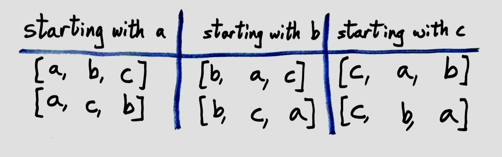

Today I’ll be tackling the problem of generating all permutations of a given array. This is a fun problem to solve using recursion. I will assume that you are familiar with JavaScript.
TL;DR → There’s a JS Bin sample of working code at the end of this post.
With Pen And Paper
First of all, what is a permutation of an array? It’s simply a reordering of the elements of that array. Think anagrams: the word “tops” contains the same letters as “spot”, just in a different order. We’d say that [t, o, p, s] is a permutation of [s, p, o, t]. That’s pretty simple.
Now, how would we generate all possible permutations of an array? Before we think about telling a computer how to do it, let’s think about how to do it ourselves. For simplicity, let’s start by writing down all the permutations of [a, b, c]:

You might see the general pattern here. There are 3 possibilities for index 0. Then, for each of those, there are only 2 possibilities for index 1. Once you’ve chosen those, there’s only 1 choice left for index 2. That means there are 3 × 2 × 1 = 3! = 6 possible permutations, as we see above. Generalizing quickly, there must be n! permutations on an array with n elements.
Setting Up Our Algorithm
Now we need to tell the computer how to do precisely what we did by hand. That is, we need to turn our loose pen-and-paper method into an algorithm. Setting it up is easy: we’ll create an array perms, add all the permutations of the input arr to it, then return perms, like so:
1 | function allPermutations(arr) { |
As we saw above, there are n possibilities for index 0. Let’s loop through those possibilities (the n elements of arr) and set that as the first element of a permutation. We’ll then need to generate all the permutations of arr which start with that first element.
1 | function allPermutations(arr) { |
We’ve reduced the problem to figuring out line 7. This is where the recursion comes in!
Using Recursion
Start with a concrete example like we did by hand. Say we’re dealing with [a, b, c] again. First, we fix firstElement as a. To find all such permutations, we just need to find all permutations of the remaining elements and prepend a to each. The permutations of [b, c] are simply [b, c] and [c, b]. Prepend a to each, and we get
1 | [a, b, c] |
which is the first column in our hand-generated list of permutations. If we do this with b and c, then we’re done! The important part here is that we need to do the exact same thing – find all permutations – to a subset of the original problem. That’s what recursion is all about. What we need to do here is call allPermutations on the “remaining elements” (i.e., arr minus firstElement). In JavaScript, one way to compute this array of remaining elements is
1 | var remaining = arr.slice(0, i).concat(arr.slice(i + 1)); |
We can then call allPermutations on remaining. For each permutation, we’ll prepend firstElement, then add it to perms (which, remember, is supposed to eventually be the collection of all permutations that we want).
1 | function allPermutations(arr) { |
We’re almost there! The last thing our recursive function needs is a base case. This tells is when to stop recursing. This is usually the trivial case. Here, the base case can be when arr only has 1 element. In that case, there’s only one permutation! Put that in, and our final code is